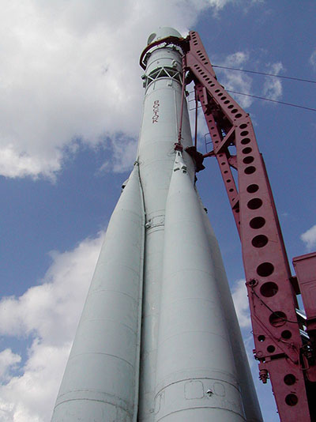

Ракета-носитель "Восток" была создана в Советском Союзе. Использовалась для запусков первых автоматических лунных станций, пилотируемых кораблей-спутников ("Восток"), различных искусственных спутников.
Старт проекту был дан постановлением ЦК КПСС и Совета министров СССР от 20 марта 1958 г., которым предусматривалось создание ракеты космического назначения на базе двухступенчатой межконтинентальной баллистической ракеты (МБР) Р-7 ("семерка", индекс 8К71) с добавлением блока 3-й ступени. Работы по ракете вел разработчик "семерки", ОКБ-1 (ныне РКК "Энергия" им. С.П. Королева) под руководством главного конструктора Сергея Королева. Эскизный проект третьей ступени МБР Р-7, получившей обозначение "блок Е", был выпущен в том же 1958 г. Ракете- носителю было дано обозначение 8К72К.
Ракета-носитель имела три ступени. Ее длина составляла 38,2 м, диаметр - 10,3 м, стартовая масса - около 287 т. Двигатели всех ступеней использовали в качестве топлива керосин и жидкий кислород. Систему управления блока Е разработал НИИ-885 (ныне Научно-производственный центр автоматики и приборостроения им. академика Н.А. Пилюгина, Москва) под руководством Николая Пилюгина. Могла выводить в космос полезный груз массой до 4,5 т.
Запуски ракеты-носителя осуществлялись с космодрома Байконур. Первые испытательные запуски проводились в рамках лунной программы. Впервые ракета стартовала 23 сентября 1958 г. с лунной станцией Е1, однако запуск закончился аварией на 87-й секунде полета (причина - возникновение возрастающих продольных колебаний). Следующие два старта были также аварийными. Успехом увенчался четвертый запуск 2 января 1959 г. с автоматической межпланетной станцией (АМС) "Луна-1". В том же году ракетой благополучно были выведены в космос АМС "Луна-2" и "Луна-3". 15 мая 1960 г. с помощью ракеты был запущен прототип пилотируемого корабля "Восток" - экспериментальное изделие 1К (открытое наименование - "Спутник"). Следующие запуски в 1960 г. проводились с кораблями 1К, на борту которых в специальных контейнерах находились собаки. 19 августа был запущен корабль-спутник с собаками Белкой и Стрелкой. 9 и 25 марта 1961 г. состоялось два успешных запуска с кораблями, предназначенными для пилотируемых полетов (3КА), также с собаками на борту. Животные Чернушка и Звездочка полностью проделали путь, который предстоял первому космонавту: взлет, один виток вокруг Земли и посадка. 12 апреля 1961 г. ракета-носитель вывела в космос корабль-спутник "Восток" с Юрием Гагариным. Первая публичная демонстрация макета ракеты состоялась в 1967 г. на авиасалоне в Ле-Бурже во Франции. Тогда же впервые ракета была названа "Востоком", до этого в советской прессе ее именовали просто "сверхмощной ракетой- носителем" и т. п. Всего было проведено 26 запусков ракеты "Восток" - 17 успешных, 8 аварийных и один нештатный (при запуске 22 декабря 1960 г. из-за сбоя в работе ракеты корабль-спутник с собаками совершил полет по суборбитальной траектории, животные выжили). Последний состоялся 10 июля 1964 г. с двумя научными спутниками "Электрон".
12 апреля 1961 г. Юрий Алексеевич Гагарин совершил первый в истории человечества космический полет на космическом корабле "Восток", стартовавшем с космодрома Байконур.
За 1 час 48 минут он облетел земной шар и благополучно приземлился в окрестности деревни Смеловки Терновского района Саратовской области.
Юрий Гагарин
Первый человек, покоривший космос